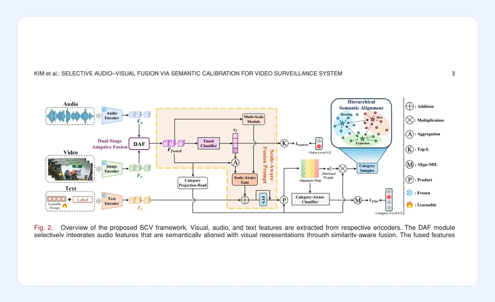
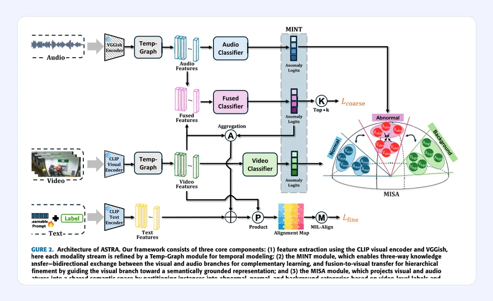
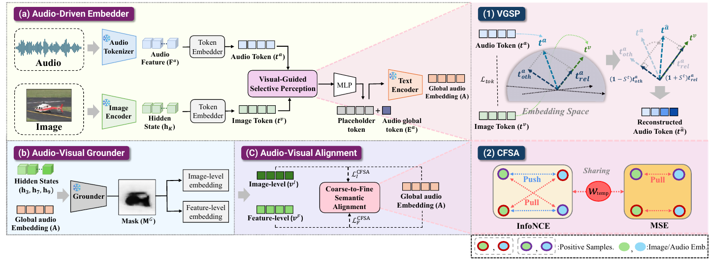
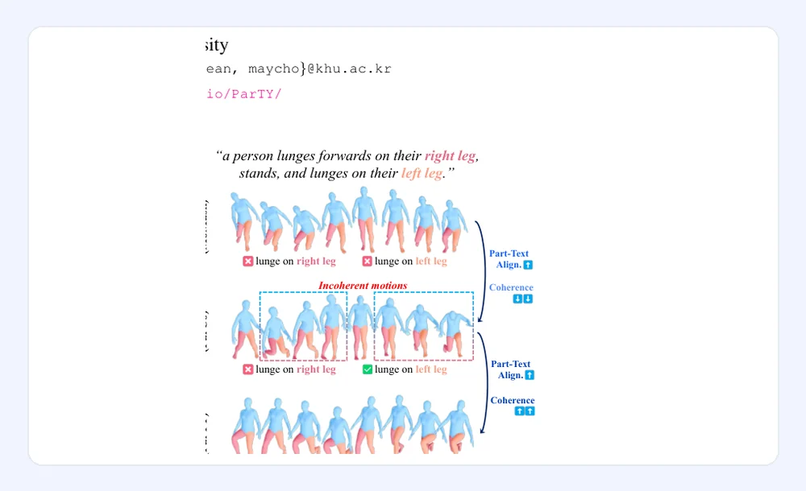
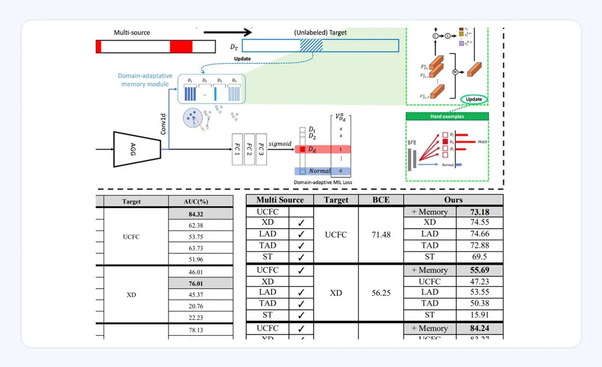

About Me
I am a researcher at the Korea Institute of Robotics & Technology Convergence (KIRO).
Research Interests
- Computer Vision: video understanding, video anomaly detection, weakly supervised learning
- Multimodal Learning: audio–visual fusion, vision–language models (VLMs), semantic alignment
- Robotics & Generalization: vision–language–action (VLA), domain adaptation, robust robot perception
News
- [Sep. 2026] Our collaborative paper on selective audio–visual alignment appeared in IEEE TMM.
- [Aug. 2026] Received my M.S. degree from Kyung Hee University.
- [Jul. 2026] Two first-author papers were published in IEEE TII and IEEE Access.
- [Jul. 2026] Joined KIRO as a researcher.
- [Jun. 2026] Our paper ParTY appeared at CVPR 2026.
Publications (* equal contribution)

Youngbin Kim, Wongyu Lee, SuYeon Kim, MyeongAh Cho
IEEE Transactions on Industrial Informatics (TII), 2026
[Paper]

Youngbin Kim, Taeyeong Kim, Wongyu Lee, MyeongAh Cho
IEEE Access, 2026
[Paper]

Wongyu Lee, Youngbin Kim, KunHo Heo, MyeongAh Cho
IEEE Transactions on Multimedia (TMM), 2026
[Paper]

KunHo Heo, SuYeon Kim, Yonghyun Gwon, Youngbin Kim, MyeongAh Cho
IEEE/CVF Conference on Computer Vision and Pattern Recognition (CVPR), 2026
[Paper] [Code] [Project]

Taeyeong Kim*, Youngbin Kim*, Donghyeong Kim, Hyeonjeong Lim, MyeongAh Cho
IEEE International Conference on Consumer Electronics–Asia (ICCE-Asia), 2024
[Paper]
Education & Experience
- 2026–PresentResearcher, Korea Institute of Robotics & Technology Convergence (KIRO)
- 2024–2026M.S., Artificial Intelligence Engineering, Kyung Hee University
- 2022–2024B.S., Embedded Systems Engineering, Tech University of Korea
- 2020–2022Attended, Automotive Systems Engineering, Joongbu University